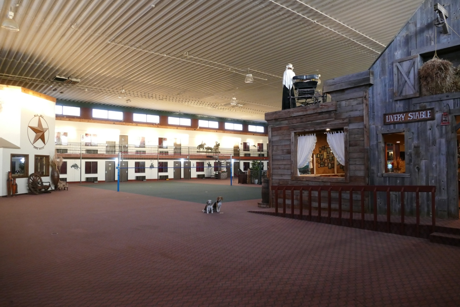

Dodge House seems to be a motel with its courtyard roofed over and some Western buildings installed in what is now an atrium. The Livery Stable has tables for playing poker and walls of photos from the TV series Gunsmoke, which was filmed here. Though it needs some work here and there, Dodge House is a delight, and I'd stay there again. The lobby is full of treasures and many fascinating murals and maps hang on the walls.
Dodge City Halley Beagle Kansas Wallace Beagle